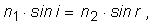
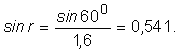
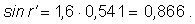
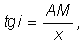
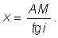
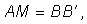
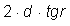
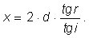
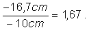
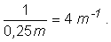

Ştiind că unghiul de incidenţă este i = 600, să se afle:
a) unghiul de refracţie (r) făcut de raza de lumină în stică;
b) unghiul de emergenţă (r') al razei din placa de sticlă;
c) cum depinde acest unghi de grosimea plăcii de sticlă, d;
d) în figura 1 sunt desenate câteva dintre razele care se propagă în acest sistem optic.
Desenaţi şi alte raze care există în acest sistem şi explicaţi valorile unghiurilor.
Rezolvare:
a) Cunoscând indicele de refracţie al sticlei, putem calcula unghiul de refracţie folosind relaţia generală

în care, pentru aer, considerăm valoarea indicelui de refracţie 1 pentru aer şi 1,6 pentru sticlă. Astfel,

Folosind un calculator pentru funcţii trigonometrice (sau căutând într−un tabel cu valori ale funcţiilor trigonometrice), aflăm că r = 32,80.
b) Din figura 1, observăm că, la interfaţa a doua a plăcii, raza de lumină are, faţă de normală, un unghi de incidenţă i' egal cu r (unghiuri alterne interne, deoarece placa este plan−paralelă). Astfel,

Această valoare a sinusului corespunde unghiului r' = 600.
Aşadar, ieşirea din placă (emergenţa) se face sub acelaşi unghi ca şi incidenţa, ceea ce arată că raza emergentă este paralelă cu cea incidentă.
c) Din răspunsul la întrebarea b) rezultă că, indiferent de grosimea plăcii, raza incidentă şi cea emergentă sunt paralele.
Aşadar, unghiul de emergenţă nu depinde de grosimea plăcii.
d) În figura 2 sunt prezentate şi alte raze.
La suprafaţa de separaţie între cele două medii există şi raze reflectate, şi raze refractate. Aceste raze pot forma imagini multiple,
care pot fi văzute (de exemplu, când priveşti prin geamul vitrinei unui magazin).
Să se găsească distanţa dintre imaginile succesive care apar.
Rezolvare:
Aspectele geometrice pot fi detaliate, ca în figura 4, segmentul AM fiind perpendicular pe OA.
Din triunghiul A'AM, avem

i având aceeaşi măsură ca şi unghiul de incidenţă. Astfel, distanţa dintre imaginile succesive formate în A şi A' este:

Din paralelogramul AMB'B rezultă că

Dar BB' este  (r fiind unghiul de refracţie în placă), astfel că

Cunoscând unghiul de incidenţă i şi indicele de refracţie al materialului din care este confecţionată placa, poţi determina măsura unghiului
de refracţie r (folosind legea lui Snell) şi astfel, poţi determina distanţele dintre imaginile succesive.
a. Unde se va forma imaginea?
b. Cât este de mare imaginea unei pagini a cărţii, în comparaţie cu acea pagină?
c. Cât este convergenţa acestei lentile, exprimată în dioptrii?
Rezolvare:
a. Introducând datele în formula lentilelor subţiri, obţinem coordonata imaginii: 16,6 cm.
Valoarea negativă obţinută indică faptul că imaginea se află de aceeaşi parte a lentilei ca şi obiectul şi, în consecinţă, imaginea este virtuală.
b. Mărirea liniară se obţine ca raport al coordonatelor faţă de lentilă ale imaginii, respectiv obiectului:

Aşadar, imaginea este mai mare de 1,67 ori în comparaţie cu obiectul, astfel încât lentila funcţionează ca o lupă.
c. Convergenţa este dată, prin definiţie, ca inversul distanţei focale. Aşadar, convergenţa aceste lentile este:

O sursă de lumină (un bec) se află plasată, pe aceeaşi axă optică, la 40 cm de lentila convexă.
Unde se va forma imaginea în acest sistem de lentile?
Rezolvare:
Dacă lentila convexă ar fi singură, aceasta ar forma o imagine care s−ar afla la 40 cm de lentilă, rezultat obţinut din formula lentilelor subţiri.
Imaginea formată de lentila convexă devine obiect pentru lentila concavă.
Folosind formula lentilelor şi în cazul lentilei concave, rezultă că imaginea finală se formează la 0,75 de lentila concavă, imaginea fiind reală, răsturnată şi mărită.